0. Cómo usar este manual
Este manual explica, módulo por módulo, qué hace cada pestaña de la aplicación, cómo se usa paso a paso y cómo interpretar sus resultados. Todas las imágenes se tomaron con los datos de ejemplo que trae la aplicación, así que usted puede reproducir cada paso en su computador y obtener las mismas cifras.
Puede leer el manual de corrido o ir directo al módulo que necesita usando el índice. Haga clic en cualquier imagen para verla en tamaño completo.
1. Primeros pasos
1.1 Abrir la aplicación
- Descargue la carpeta de la aplicación. Si la recibe desde GitHub (github.com/csiegelt/appgrd), use el botón verde Code › Download ZIP y descomprima el archivo.
- Abra el archivo
index.htmlcon doble clic. Se abrirá en su navegador; se recomienda Google Chrome o Microsoft Edge. - No necesita instalar nada ni estar conectado a internet: la aplicación funciona completa en su computador.
Este manual se abre desde la pestaña Manual de ayuda, a la derecha de las pestañas de la aplicación, o con el archivo manual/index.html.
1.2 La pantalla principal
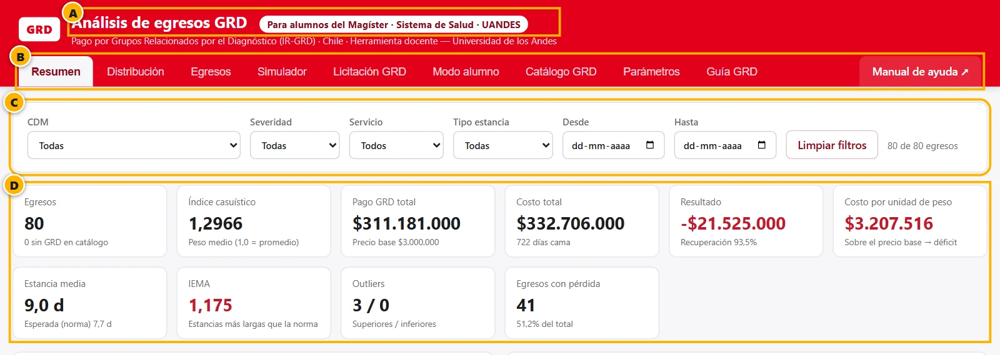
- A Título. Identifica la herramienta docente del Magíster.
- B Pestañas. Cada una es un módulo: Resumen, Distribución, Egresos, Simulador, Licitación GRD, Modo alumno, Catálogo GRD, Parámetros y Guía GRD. Haga clic en una para cambiar de módulo.
- C Filtros. Sólo aparecen en Resumen y Distribución; limitan el análisis a una parte de los egresos.
- D Indicadores. Los números clave del análisis (se explican en el capítulo 4).
1.3 Dónde se guardan los datos
Todo lo que usted ingresa se guarda automáticamente en su navegador, en su computador. Nada se envía a internet. Esto tiene dos consecuencias:
- Si abre la aplicación en otro navegador (por ejemplo, Edge en vez de Chrome) o en otro computador, verá otros datos.
- Para guardar una copia o llevar sus datos a otro equipo, use Parámetros › Descargar respaldo completo (capítulo 11). El archivo incluye egresos, catálogo, parámetros, la pestaña Licitación GRD, el caso clínico y el historial del Modo alumno.
La primera vez que se abre, la aplicación carga 80 egresos de ejemplo y un catálogo de 27 GRD ilustrativos, y muestra un aviso en la parte inferior de la pantalla.
1.4 Cómo escribir los números
| Tipo de dato | Escriba así | También se acepta |
|---|---|---|
| Montos en pesos | 3.000.000 | 3000000, $3.000.000 |
| Decimales (peso, EM) | 2,34 | 2.34 |
| Montos negativos (pérdida) | -1.520.000 | -$1.520.000 |
| Porcentajes | 127,6 | 127,6 % |
Este formato sirve en todos los campos numéricos de la aplicación y en los archivos CSV. En los ejercicios, bajo cada respuesta aparece "Se leerá como…" para que confirme que el número se interpretó bien.
1.5 Ruta de aprendizaje recomendada
- Guía GRD
Repase los conceptos. - Simulador
Calcule un caso simple. - Modo alumno · Caso
Analice un paciente con explicación. - Modo alumno · Practicar
Resuelva ejercicios con nota. - Egresos
Revise o cargue datos. - Resumen
Diagnostique la institución. - Distribución
Ubique a la institución frente a una referencia. - Licitación GRD
Prepare una oferta por tramos.
2. Conceptos GRD en 5 minutos
Los Grupos Relacionados por el Diagnóstico (GRD) clasifican cada egreso hospitalario en un grupo de pacientes clínicamente parecidos y con consumo de recursos similar. En Chile se usa la versión IR-GRD. Con el mecanismo de pago GRD, el asegurador (por ejemplo, FONASA) no paga cada prestación por separado: paga un monto fijo por egreso según su GRD.
Resultado = Pago − Costo
Ejemplo de la clase: $3.000.000 × 2,34 = $7.020.000. Si el egreso costó $5.500.000, el resultado es +$1.520.000.
| Concepto | Qué es | Cómo se interpreta |
|---|---|---|
| Precio base | Valor en pesos de un egreso de peso 1,0, pactado con el asegurador. | Es el "precio" que negocia la institución. |
| Peso relativo | Costo esperado del GRD frente al egreso promedio (peso 1,0). | Peso 2,34 = paciente 2,34 veces más costoso que el promedio. |
| Código IR-GRD | 6 dígitos: CDM (2) + tipo (1) + GRD (2) + severidad (1). | 184103 → CDM 18 infecciosas, médico, severidad 3 (mayor). |
| PCI / PCS | Puntos de corte inferior y superior de estadía del GRD. | Entre ambos: inlier. Sobre el PCS: outlier superior. Bajo el PCI: outlier inferior. |
| P50 (carencia) | Mediana de estadía del GRD. | En outliers superiores, los días adicionales se pagan sólo después de PCS + P50. |
| Costo por unidad de peso | Costo ÷ peso. | Si supera al precio base, se pierde. Es el "precio base de equilibrio". |
| Índice casuístico | Peso promedio de los egresos. | Sobre 1,0 = pacientes más complejos que el promedio. |
| IEMA | Estancia media observada ÷ estancia media esperada según la norma. | Bajo 1 = eficiente; sobre 1 = estadías más largas que la norma. |
| % de recuperación | Pago ÷ costo × 100. | Sobre 100 % el pago cubre el costo. |
La pestaña Guía GRD de la aplicación resume estos conceptos, y el glosario al final de este manual los define uno a uno.
3. Egresos: la base de datos
Para qué sirve: aquí están los pacientes dados de alta (egresos). Las pestañas Resumen, Distribución y Licitación (con fuente "egresos cargados") se calculan a partir de esta lista.
3.1 Registrar un egreso
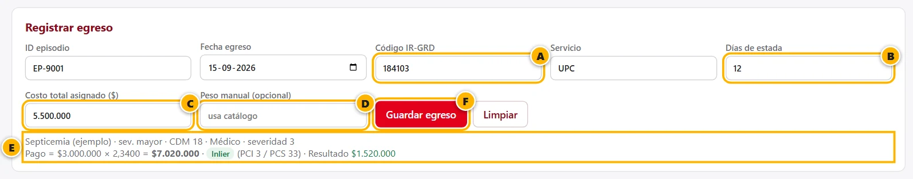
- Escriba el ID del episodio (por ejemplo,
EP-9001) y la fecha de egreso. - A Escriba el código IR-GRD de 6 dígitos. Al escribir aparece una lista con los GRD del catálogo.
- Escriba el servicio y B los días de estada.
- C Escriba el costo total asignado al egreso, en pesos.
- D Deje vacío el peso manual: el peso se toma del catálogo. Úselo sólo si el GRD no está en el catálogo.
- E Revise la vista previa: muestra el diagnóstico, CDM, tipo, severidad, el cálculo del pago, si es inlier u outlier (con PCI y PCS) y el resultado.
- F Presione Guardar egreso.
3.2 La tabla de egresos
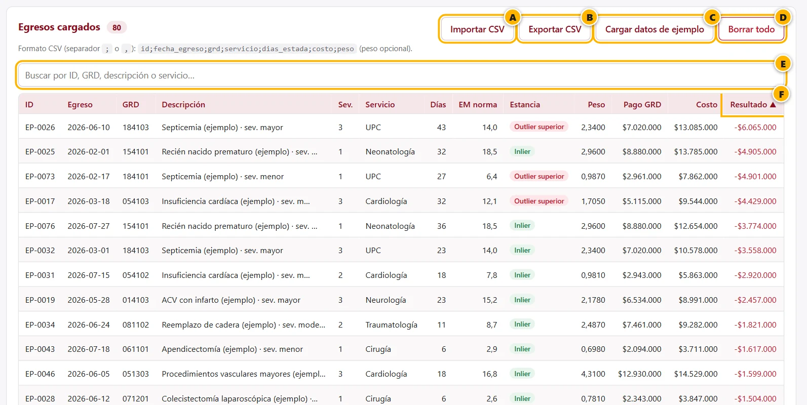
- A Importar CSV: carga egresos desde una planilla (ver 3.3).
- B Exportar CSV: descarga la tabla con todos los cálculos (pago, resultado, tipo de estancia…) para abrirla en Excel.
- C Cargar datos de ejemplo: reemplaza los egresos por los 80 de ejemplo.
- D Borrar todo: elimina todos los egresos. Pide confirmación: haga clic dos veces.
- E Buscador: filtra por ID, código GRD, diagnóstico o servicio.
- F Ordenar: haga clic en el encabezado de cualquier columna; un segundo clic invierte el orden (▲/▼).
- Editar / ✕: al final de cada fila (desplace la tabla hacia la derecha) están los botones para corregir o borrar ese egreso. Al editar, los datos vuelven al formulario de arriba.
Las columnas más útiles son Estancia (inlier u outlier), Pago GRD, Costo, Resultado (verde si gana, rojo si pierde) y % recup.
3.3 Importar sus propios egresos
- Prepare una planilla con estas columnas (la primera fila son los nombres):
Hay una plantilla lista en
id fecha_egreso grd servicio dias_estada costo peso EP-1001 15-03-2026 184103 UPC 12 5.500.000 (opcional) plantillas/egresos_plantilla.csv. - En Excel, use Archivo › Guardar como y elija el tipo CSV UTF-8 (delimitado por comas); el tipo CSV (delimitado por comas) también sirve. Según la configuración regional, Excel separa con coma o con punto y coma: la aplicación acepta ambos y conserva los tildes (por ejemplo, «Cirugía»). Los costos pueden ir con o sin puntos de miles (
5.500.000o5500000). - Presione Importar CSV y elija el archivo. Un aviso indica cuántos egresos se importaron. Si un ID ya existe, ese egreso se actualiza.
peso.4. Resumen: la foto general de la institución
Para qué sirve: responde la pregunta "¿cómo le va a la institución con el pago GRD y dónde gana o pierde?".
4.1 Filtrar el análisis
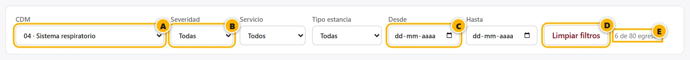
- A CDM: categoría diagnóstica mayor (sistema corporal).
- B Severidad: 1 menor, 2 moderada, 3 mayor. Junto a ella están Servicio y Tipo de estancia (inlier u outliers).
- C Desde / Hasta: rango de fechas de egreso.
- D Limpiar filtros: vuelve a mostrar todos los egresos.
- E Contador: cuántos egresos quedan después de filtrar.
Los filtros se combinan entre sí y se aplican a la vez en Resumen y en Distribución.
4.2 Los indicadores
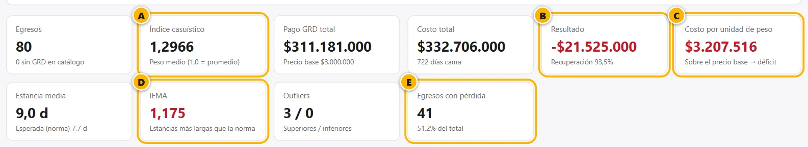
- A Índice casuístico 1,2966: los pacientes son en promedio un 30 % más complejos que el egreso promedio (peso 1,0).
- B Resultado -$21.525.000: el pago GRD total ($311.181.000) no cubre el costo total ($332.706.000). Se recupera el 93,5 % del gasto.
- C Costo por unidad de peso $3.207.516: supera al precio base de $3.000.000. Es la causa de fondo de la pérdida: cada unidad de peso cuesta más de lo que se paga.
- D IEMA 1,175: los pacientes se quedan en promedio un 17,5 % más de días que lo esperado según la norma (9,0 días frente a 7,7).
- E Egresos con pérdida 41: el 51,2 % de los egresos cuesta más de lo que se paga por él.
Los demás indicadores: Egresos (cantidad, y cuántos no tienen su GRD en el catálogo), Pago GRD total, Costo total (con los días cama), Estancia media y Outliers (superiores / inferiores).
4.3 Los gráficos
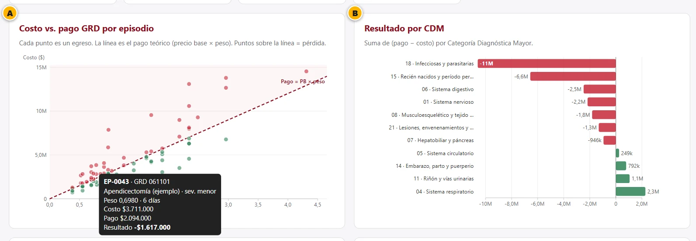
- A Costo vs. pago GRD por episodio. Cada punto es un egreso: eje horizontal = peso, eje vertical = costo. La línea punteada es lo que paga el GRD (precio base × peso). Los puntos rojos, sobre la línea, son egresos que pierden; los verdes, bajo la línea, ganan. Pase el mouse sobre un punto para ver su detalle, y haga clic para abrirlo en la pestaña Egresos.
- B Resultado por CDM. Suma de pago − costo por categoría diagnóstica. En el ejemplo, la CDM 18 (infecciosas) pierde cerca de $11 millones y la CDM 04 (respiratorio) gana $2,3 millones. Haga clic en una barra para filtrar todo el análisis por esa CDM.
4.4 Las tablas
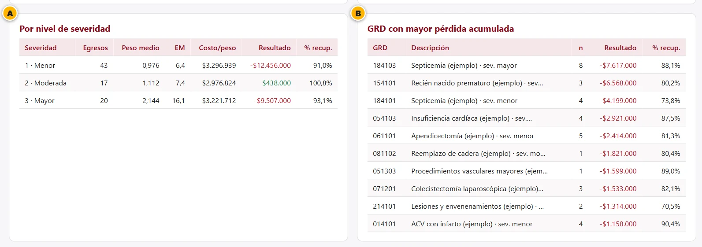
- A Por nivel de severidad: compara egresos, peso medio, estancia media, costo por unidad de peso, resultado y % de recuperación de los niveles 1, 2 y 3. Permite ver si los pacientes más graves concentran la pérdida.
- B GRD con mayor pérdida acumulada: los 10 GRD donde más se pierde. Son los primeros candidatos para revisar costos, protocolos o estadías.
5. Distribución: dónde se ubica la institución
Para qué sirve: el Resumen entrega promedios; la Distribución muestra cómo se reparten los egresos y en qué rango cae la institución frente a una referencia (por ejemplo, el promedio de su red o de hospitales de la misma complejidad). Permite distinguir un problema generalizado de unos pocos casos extremos.
5.1 Elegir qué analizar
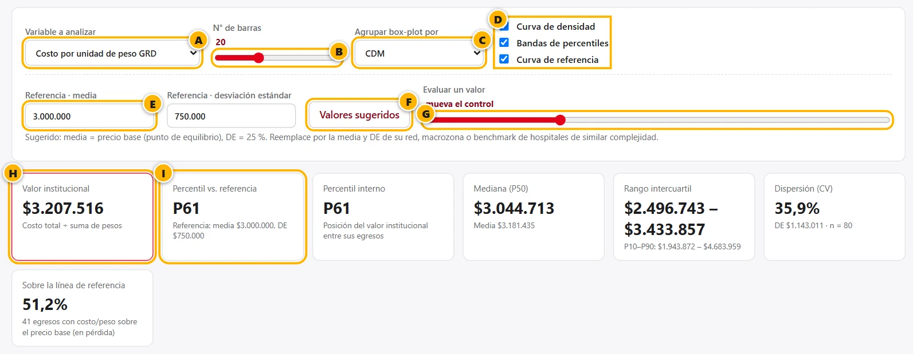
- A Variable a analizar: costo por unidad de peso, % de recuperación, resultado por egreso, índice de estancia (días ÷ EM de la norma), costo total, costo por día, peso GRD o días de estada.
- B N° de barras: más barras = más detalle en el histograma.
- C Agrupar box-plot por: CDM, severidad, servicio, GRD o tipo de estancia (ver 5.4).
- D Mostrar u ocultar la curva de densidad, las bandas de percentiles y la curva de referencia.
- E Referencia (media y desviación estándar): los datos del benchmark con que se compara la institución. Puede escribir los de su red.
- F Valores sugeridos: carga una referencia razonable. Para costo por unidad de peso, la media sugerida es el precio base (el punto de equilibrio). Sólo hay valores sugeridos para costo por unidad de peso, % de recuperación, resultado por egreso e índice de estancia; para las demás variables escriba la media y la desviación estándar de su referencia (si no, la franja compara con sus propios egresos).
- G Evaluar un valor: mueva el control para marcar un valor y ver en qué percentil queda.
- H Valor institucional: el valor global de la institución (por ejemplo, costo total ÷ suma de pesos).
- I Percentil frente a la referencia: P61 significa que la institución supera al 61 % de la referencia.
Los demás indicadores muestran el percentil interno (posición del valor institucional entre sus propios egresos; P61 en el ejemplo), la mediana, el rango intercuartil (P25–P75), la dispersión (coeficiente de variación) y qué porcentaje de egresos queda sobre la línea de referencia (51,2 % en el ejemplo, es decir, 41 egresos en pérdida).
5.2 Leer la curva
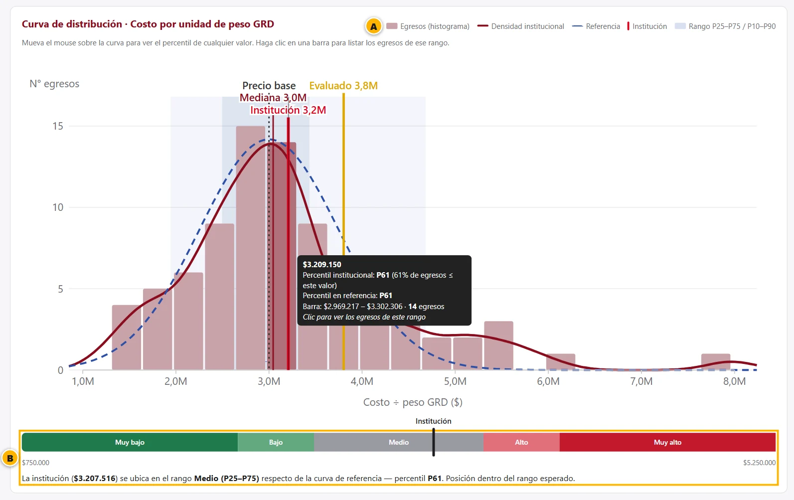
- A Leyenda:
- Las barras (histograma) indican cuántos egresos hay en cada rango de valores.
- La curva roja oscura es la forma de la distribución de la institución.
- La curva azul punteada es la referencia.
- La línea roja marca la institución.
- Las bandas celestes son el 50 % central (P25–P75) y el 80 % central (P10–P90).
- B Franja de rango: ubica a la institución entre Muy bajo y Muy alto respecto de la referencia y da un veredicto en palabras. En el ejemplo: "se ubica en el rango Medio (P25–P75) respecto de la curva de referencia — percentil P61. Posición dentro del rango esperado.". Los colores dependen de la variable: para costos, verde es bajo (favorable) y rojo es alto.
Pase el mouse sobre la curva: el recuadro negro indica el percentil de ese valor (por ejemplo, "61 % de los egresos ≤ este valor"), su percentil en la referencia y cuántos egresos hay en esa barra.
5.3 Ver los egresos de un rango
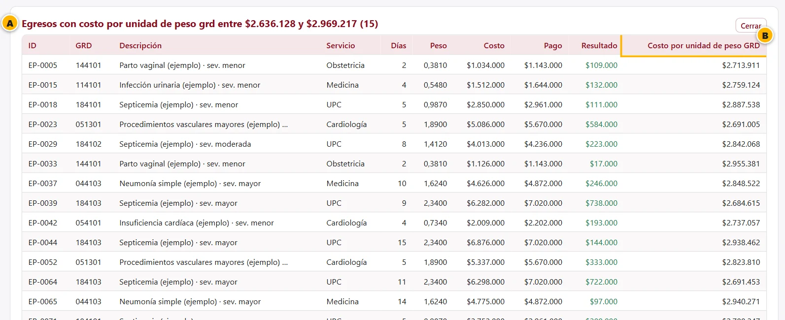
- A El título indica el rango seleccionado y cuántos egresos contiene. Con Cerrar se oculta la tabla.
- B La última columna muestra el valor de la variable analizada para cada egreso. Puede ordenar cualquier columna.
5.4 Comparar grupos (box-plot)
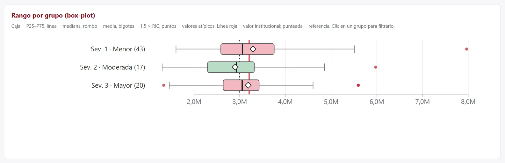
Cada fila es un grupo:
- La caja abarca del P25 al P75 (el 50 % central).
- La línea negra dentro de la caja es la mediana y el rombo es la media.
- Los bigotes muestran el rango habitual, y los puntos rojos son valores atípicos.
- La línea roja vertical es el valor de la institución. La línea punteada negra es la línea de referencia de la variable: el precio base en costo por unidad de peso y la norma 1,0 en índice de estancia (no es la curva azul de referencia de 5.2).
- Las cajas rosadas tienen la mediana en el lado desfavorable de esa línea punteada (por ejemplo, costo por unidad de peso sobre el precio base); las verdes, en el lado favorable.
Un clic en un grupo filtra todo el análisis por él (al agrupar por CDM, severidad, servicio o tipo de estancia; al agrupar por GRD el clic no filtra).
6. Simulador: calcular un caso rápido
Para qué sirve: reproduce el cálculo de la clase para un solo egreso y muestra qué pasa si cambian el precio base o el costo.
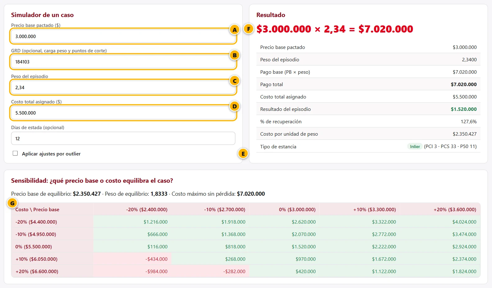
- A Escriba el precio base pactado.
- B (Opcional) Escriba el GRD: se completan el peso y los días según el catálogo.
- C Confirme o escriba el peso del episodio.
- D Escriba el costo total asignado y, si quiere, los días de estada.
- E Marque Aplicar ajustes por outlier si quiere incluir el pago por días adicionales (usa las reglas de la pestaña Parámetros).
- F Lea el resultado: la fórmula del pago y la tabla con pago, costo, resultado, % de recuperación, costo por unidad de peso y tipo de estancia.
- G Revise la tabla de sensibilidad: cada celda es el resultado si el precio base (columnas) y el costo (filas) suben o bajan hasta un 20 %. Verde = gana; rojo = pierde.
Arriba de la tabla se indican el precio base de equilibrio (costo ÷ peso), el peso de equilibrio (costo ÷ precio base) y el costo máximo sin pérdida.
7. Licitación GRD: preparar una oferta por tramos
Para qué sirve: analizar una licitación en la que el asegurador compra egresos pagados por GRD con un precio base distinto según el tramo de peso relativo, como en las bases de camas críticas GRD 2018 de FONASA (caso histórico):
| Precio base de referencia | Peso relativo del egreso | Rango permitido (2018) |
|---|---|---|
| Precio base 1 | ≤ 1,5 | $1.500.000 – $2.150.000 |
| Precio base 2 | > 1,5 y ≤ 2,5 | $2.150.001 – $3.200.000 |
| Precio base 3 | > 2,5 | $3.200.001 – $5.000.000 |
La oferta económica pesaba un 50 % de la evaluación. Si un precio base ofertado queda fuera de su rango, toda la oferta es inadmisible.
7.1 Empezar con un caso de ejemplo
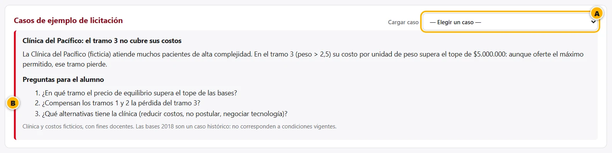
- A Cargar caso: elija uno de los 5 casos de ejemplo (cuatro clínicas ficticias y un paciente con desfibrilador). Se cargan las bases, la oferta, la casuística esperada (en «Ingreso manual por tramo») y un egreso para el simulador. Después de cargarlo, el selector vuelve a «— Elegir un caso —» y el caso cargado queda descrito en el recuadro de abajo.
- B Preguntas para el alumno: respóndalas usando los resultados de la pantalla.
| Caso de ejemplo | Qué enseña |
|---|---|
| Clínica Andina | Una oferta con margen en los 3 tramos. |
| Clínica del Pacífico | Un tramo cuyo precio de equilibrio supera el tope: pierde aunque se oferte el máximo. |
| Clínica Cordillera | Una oferta inadmisible por superar un tope. |
| Clínica Valle Central | Un precio agresivo: gana puntaje pero pierde dinero. |
| Paciente con desfibrilador | El efecto del ajuste por tecnología en un egreso. |
7.2 Las bases y su oferta
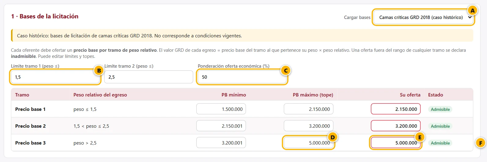
- A Cargar bases: camas críticas 2018 (histórico), compra a privados 2023 o 2024 (topes según análisis publicados), o personalizada.
- B Límites de tramo (1,5 y 2,5). Si los edita, las bases pasan a "Personalizada".
- C Ponderación de la oferta económica (50 % en 2018).
- D PB mínimo y máximo (tope) de cada tramo. También se pueden editar.
- E Su oferta: el precio base que ofertaría en cada tramo.
- F Estado: Admisible o Inadmisible (supera el tope o queda bajo el mínimo).
Así se ve una oferta inadmisible (caso Clínica Cordillera):
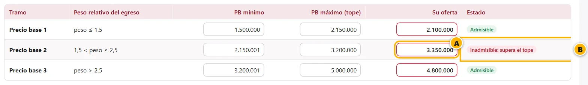
- A Oferta del precio base 2: $3.350.000.
- B Estado: Inadmisible: supera el tope.
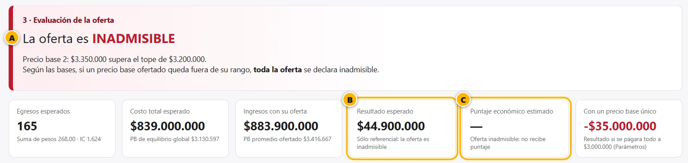
- A Veredicto: la oferta es INADMISIBLE, con la explicación.
- B El resultado esperado se muestra sólo como referencia.
- C Una oferta inadmisible no recibe puntaje económico.
7.3 Simular un egreso y ajustes por tecnología
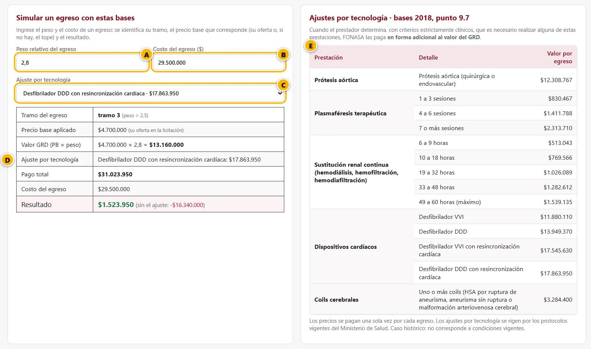
- A Escriba el peso relativo del egreso: la aplicación identifica su tramo.
- B Escriba el costo del egreso.
- C Si corresponde, elija el ajuste por tecnología.
- D Lea el resultado:
- Precio base aplicado: su oferta en el tramo del egreso, o el tope de ese tramo si no ofertó en él o si esa oferta está fuera de rango.
- Valor GRD y ajuste por tecnología.
- Pago total y resultado, con y sin el ajuste. En el ejemplo, el egreso gana $1.523.950 gracias al ajuste; sin él perdería $16.340.000.
- E Consulte la tabla de ajustes por tecnología de las bases 2018 (punto 9.7): prótesis aórtica, plasmaféresis, sustitución renal continua, desfibriladores y coils cerebrales. Se pagan una sola vez por egreso, además del valor GRD.
7.4 Casuística y costos esperados
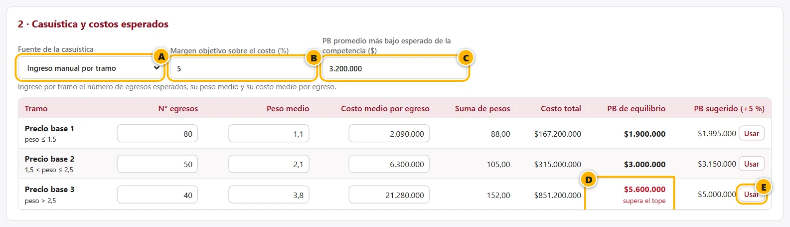
- A Fuente de la casuística: los egresos cargados en la aplicación (se clasifican por su peso) o un ingreso manual por tramo (N° de egresos, peso medio y costo medio).
- B Margen objetivo: cuánto sobre el costo quiere ganar.
- C PB promedio más bajo esperado de la competencia (opcional): el menor precio base promedio que espera de los otros oferentes. Se usa para estimar el puntaje.
- D PB de equilibrio = costo total del tramo ÷ suma de pesos del tramo. Si aparece en rojo con "supera el tope", ese tramo pierde aunque se oferte el máximo.
- E PB sugerido = equilibrio + margen, ajustado al rango de las bases. El botón Usar lo copia como su oferta.
7.5 Evaluación de la oferta y curvas
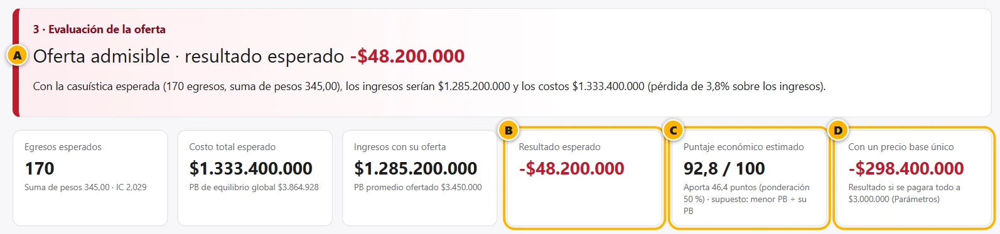
- A Veredicto: si la oferta es admisible y su resultado esperado con la casuística.
- B Resultado esperado total: ingresos con la oferta − costos.
- C Puntaje económico estimado (sobre 100) y los puntos que aporta según la ponderación. Supuesto de la aplicación: menor precio base promedio de los oferentes ÷ su precio base promedio × 100. Las bases mostradas en clase no incluyen la fórmula: verifíquela en las bases reales.
- D Con un precio base único: el resultado si todo se pagara con el precio base de la pestaña Parámetros, para comparar con el pago por tramos.
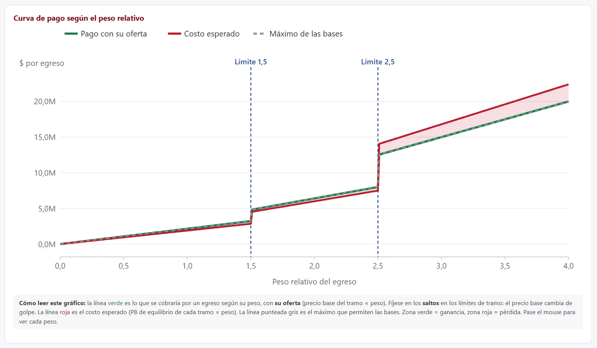
- La línea verde es lo que se cobraría por un egreso según su peso con la oferta (precio base del tramo × peso).
- La línea roja es el costo esperado.
- La línea gris punteada es el máximo permitido por las bases.
- Zona verde = ganancia; zona roja = pérdida.
Los saltos muestran que un egreso de peso 1,51 se paga con el precio base 2 y uno de 1,50 con el precio base 1. Esto crea incentivos a sobrecodificar, y por eso FONASA audita la codificación.
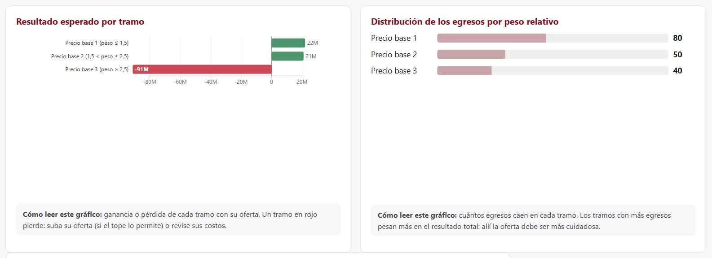
El gráfico de la izquierda muestra qué tramo gana y cuál pierde. El de la derecha muestra cuántos egresos hay en cada tramo: los tramos con más egresos pesan más en el resultado total.
7.6 Guía para analizar una licitación
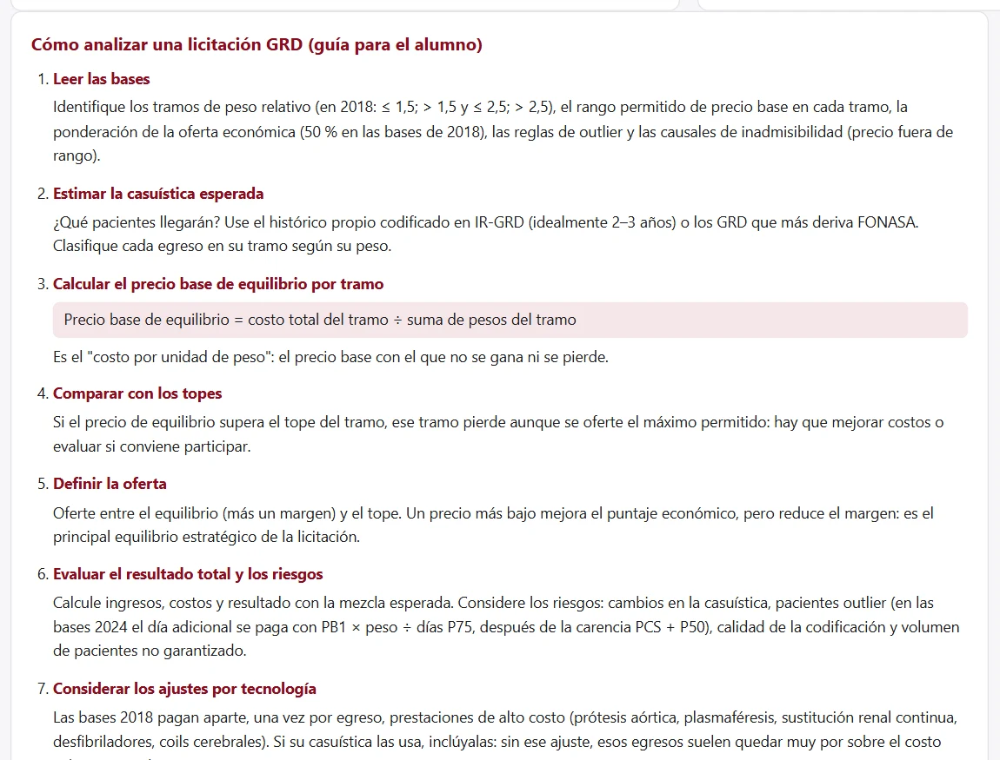
8. Modo alumno · Analizar un caso clínico
Para qué sirve: el alumno recibe un caso de una clínica, ingresa sus datos y la aplicación genera el resumen, las curvas de ganancia o pérdida y una explicación paso a paso escrita para aprender.
8.1 Ingresar los datos del caso
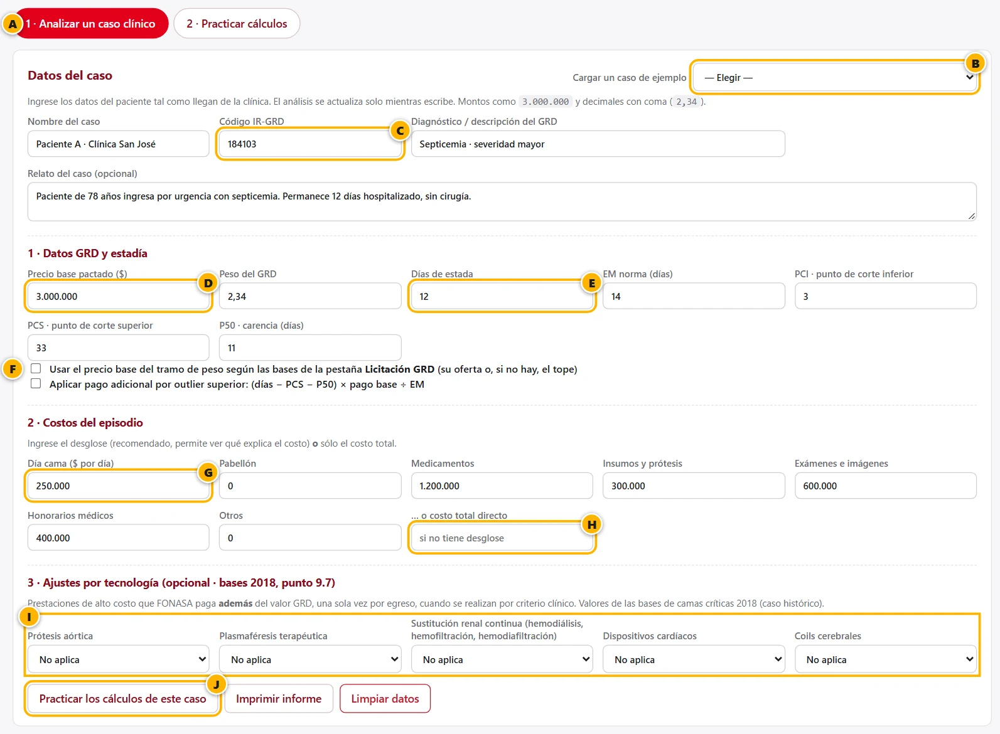
- A En la pestaña Modo alumno, elija la subpestaña 1 · Analizar un caso clínico.
- B Para empezar, cargue un caso de ejemplo: septicemia (gana), neumonía complicada (outlier), cesárea (margen estrecho), cadera (prótesis cara), apendicectomía (gana) o aneurisma con coils (licitación, tramo 3).
- C Escriba el código IR-GRD: si está en el catálogo se completan el diagnóstico, el peso, la EM, el PCI, el PCS y el P50.
- D Escriba el precio base pactado y confirme el peso.
- E Escriba los días de estada (y, si no se completaron, EM, PCI, PCS y P50).
- F Opciones:
- Usar el precio base del tramo según la pestaña Licitación GRD.
- Aplicar el pago adicional por outlier superior.
- G Escriba los costos con su desglose: día cama (por día), pabellón, medicamentos, insumos y prótesis, exámenes, honorarios y otros.
- H …o, si no tiene el desglose, sólo el costo total.
- I (Opcional) Marque los ajustes por tecnología de las bases 2018 que correspondan.
- J El análisis se actualiza solo mientras escribe. Con Practicar los cálculos de este caso se crea un ejercicio con estos mismos datos (capítulo 9). Los botones Imprimir informe y Limpiar datos están al lado.
8.2 El resultado y la explicación
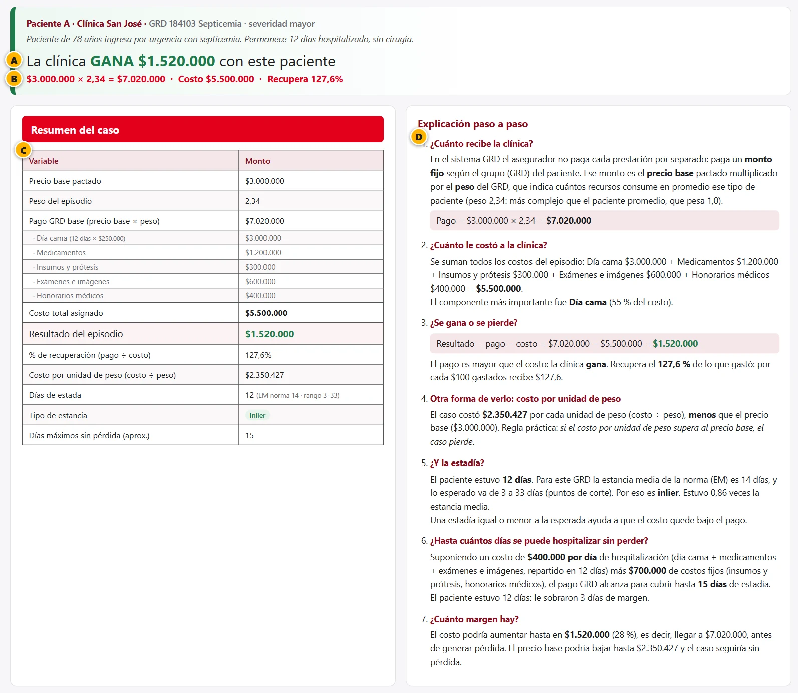
- A Veredicto: "La clínica GANA $1.520.000 con este paciente" (o PIERDE, o QUEDA EN EQUILIBRIO).
- B Fórmula del pago, costo y % de recuperación, como en la lámina de clases.
- C Resumen del caso: precio base, peso, pago, el desglose de costos, resultado, recuperación, costo por unidad de peso, días, tipo de estancia y días máximos sin pérdida.
- D Explicación paso a paso: ¿cuánto recibe la clínica?, ¿cuánto le costó?, ¿gana o pierde?, costo por unidad de peso, estadía, hasta cuántos días se puede hospitalizar sin perder y qué tendría que cambiar (o cuánto margen hay).
8.3 Los gráficos del caso
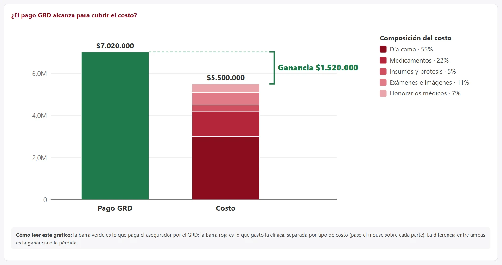
La barra verde es el pago y la roja el costo, separado por tipo (pase el mouse sobre cada parte). A la derecha se indica la ganancia o pérdida y la composición del costo en porcentajes.
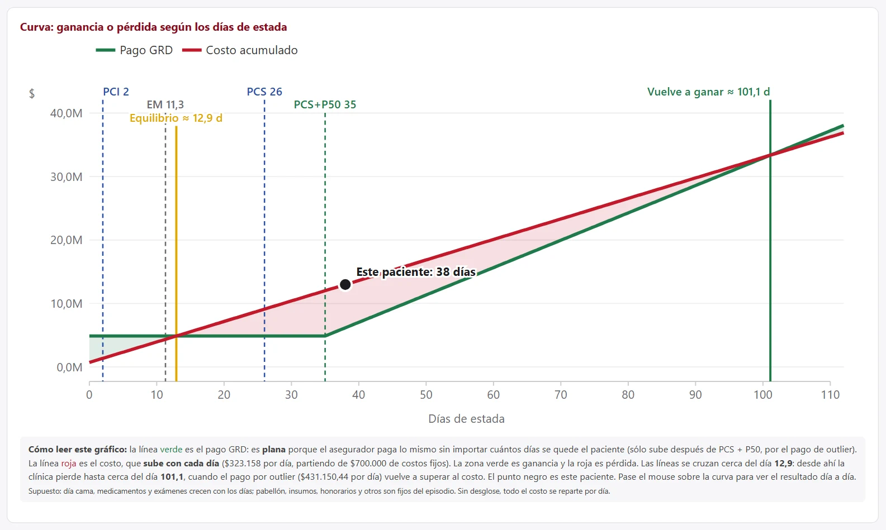
- La línea verde es el pago GRD. Es plana porque el asegurador paga lo mismo sin importar los días; sólo sube después de PCS + P50 si se aplica el pago por outlier.
- La línea roja es el costo, que sube con cada día.
- Donde se cruzan por primera vez está el día de equilibrio (línea amarilla): desde ahí la clínica pierde. Si se aplica el pago por outlier, la línea verde puede volver a superar a la roja más adelante, cuando el pago adicional acumulado alcanza al costo (línea verde «Vuelve a ganar» en la imagen).
- El punto negro es el paciente, y las líneas verticales marcan PCI, EM, PCS y PCS + P50.
Pase el mouse para ver el resultado día a día.
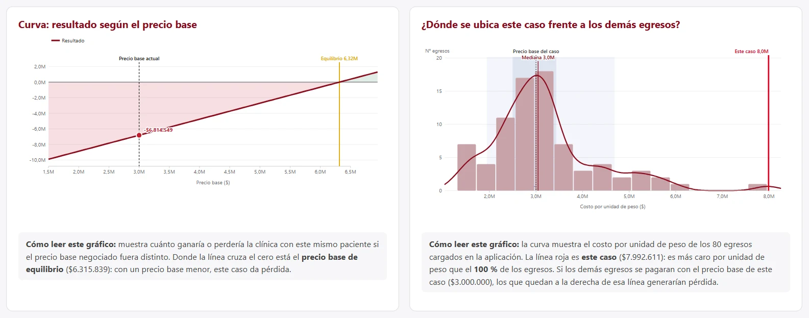
Izquierda: cuánto ganaría o perdería la clínica con este mismo paciente con otro precio base. Donde la línea cruza el cero está el precio base de equilibrio.
Derecha: el costo por unidad de peso del caso (línea roja) frente a los egresos cargados. Indica qué porcentaje de egresos es más barato que este caso.
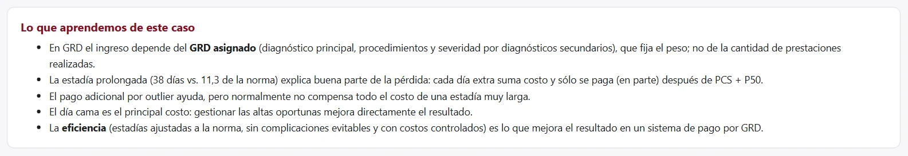
8.4 Caso con precio base por tramo y ajuste por tecnología
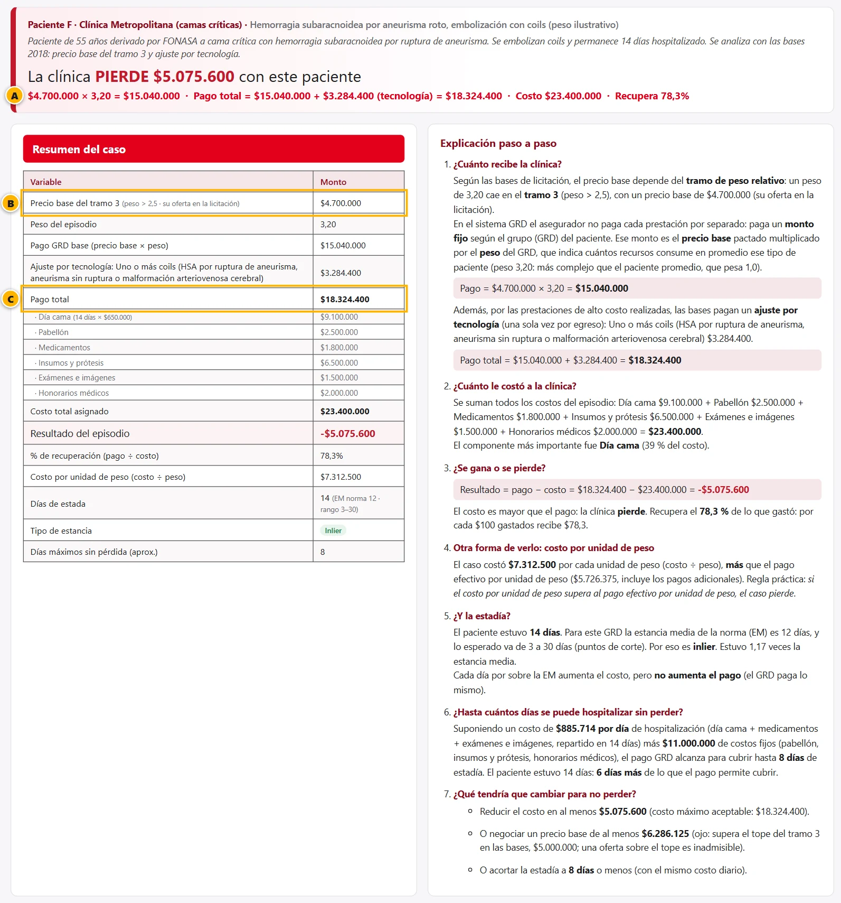
- A La fórmula muestra el valor GRD y el pago total, que suma el ajuste por tecnología (coils: $3.284.400).
- B El precio base se toma del tramo de peso (peso 3,2 → tramo 3) de la pestaña Licitación: su oferta en ese tramo, o el tope del tramo si no ofertó en él o si esa oferta está fuera de rango. Mientras esta opción está marcada, el campo Precio base queda bloqueado (en gris) y muestra ese valor.
- C Pago total = valor GRD + ajuste por tecnología (la fila anterior detalla el ajuste). Aun así, en este caso la clínica pierde, porque el costo supera al pago total.
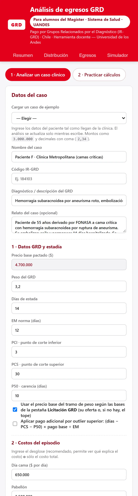
9. Modo alumno · Practicar cálculos
Para qué sirve: ejercicios en los que el alumno hace los cálculos y la aplicación los corrige, da pistas, detecta errores típicos, muestra la solución paso a paso y registra una nota.
9.1 Elegir un ejercicio
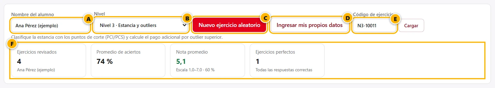
- A Nombre del alumno: queda registrado en el historial.
- B Nivel (ver tabla abajo).
- C Nuevo ejercicio aleatorio del nivel elegido.
- D Ingresar mis propios datos: para resolver un caso dictado por el docente (ver 9.4).
- E Código de ejercicio: cada ejercicio tiene un código (por ejemplo,
N3-10011). Si el docente entrega un código, todos los alumnos resuelven el mismo caso: escríbalo y presione Cargar. - F Puntaje: ejercicios revisados, promedio de aciertos, nota promedio y ejercicios perfectos del alumno.
| Nivel | Qué se calcula |
|---|---|
| 1 · Pago y resultado | Pago = precio base × peso; resultado = pago − costo (como la lámina de clases). |
| 2 · Indicadores | Además: % de recuperación, costo por unidad de peso, peso de equilibrio y si gana o pierde. |
| 3 · Estancia y outliers | Severidad, pago base, tipo de estancia, días adicionales, valor día, pago adicional, pago total y resultado. |
| 4 · Casuística | Con varios egresos: suma de pesos, índice casuístico, pago, costo y resultado totales, costo por unidad de peso, IEMA y si las estancias superan la norma. |
9.2 Resolver y revisar
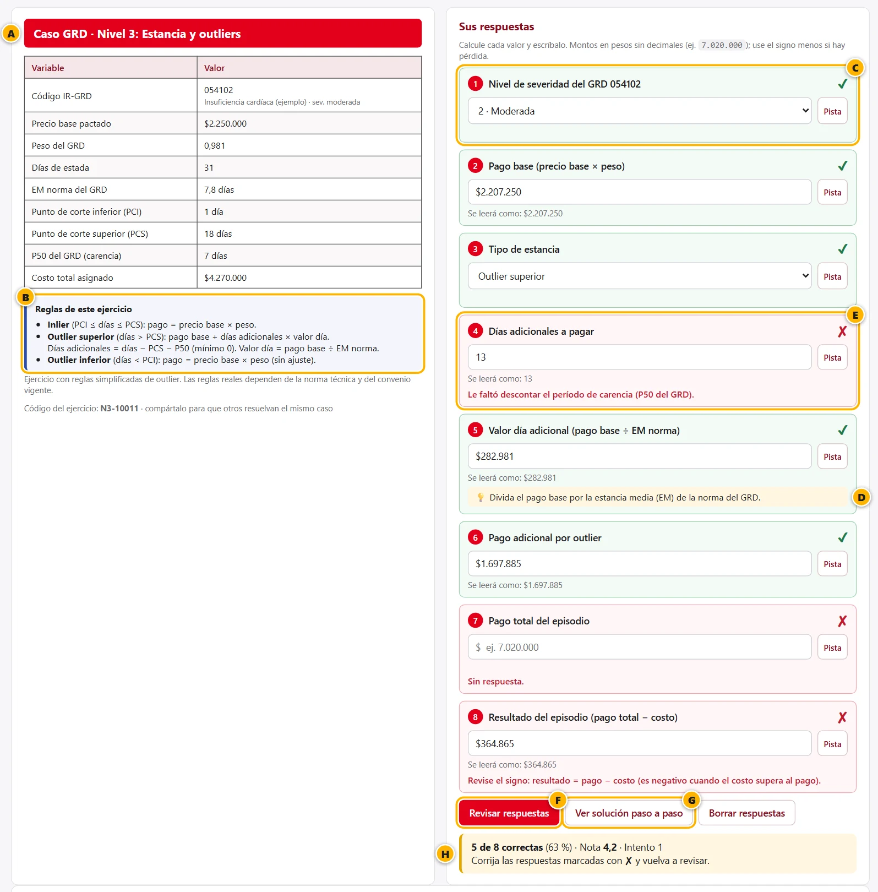
- A Lea el enunciado: la tabla con los datos del caso, con el mismo formato de la lámina de clases.
- B Lea las reglas del ejercicio (en el nivel 3, cómo se paga un outlier).
- Escriba cada respuesta en su casilla. Bajo cada una aparece "Se leerá como…" para confirmar el número. Con Enter pasa a la siguiente.
- D Si no sabe cómo seguir, presione Pista junto a la pregunta: aparece una ayuda en amarillo.
- F Presione Revisar respuestas.
- C Las respuestas correctas se marcan con ✔ y fondo verde.
- E Las incorrectas se marcan con ✘ y, si el error es típico, se explica. En la imagen:
- La pregunta 4 dice "Le faltó descontar el período de carencia (P50 del GRD)".
- La pregunta 7 quedó sin respuesta.
- La pregunta 8 dice "Revise el signo: resultado = pago − costo".
- H Lea el resultado: correctas, porcentaje, nota y número de intento. Corrija y vuelva a revisar las veces que quiera.
- G Si se rinde, presione Ver solución paso a paso: se muestran la respuesta correcta de cada pregunta y el desarrollo completo.
9.3 Solución e historial
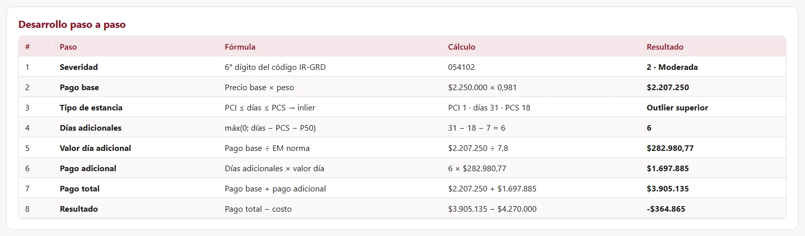
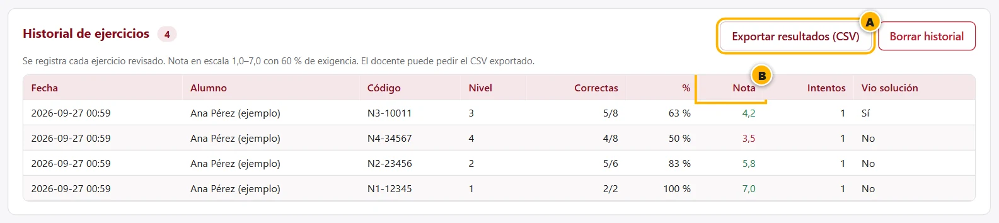
- A Exportar resultados (CSV): descarga el historial (fecha, alumno, código, nivel, correctas, porcentaje, nota, intentos y si vio la solución). El alumno puede enviarlo al docente.
- B Nota de cada ejercicio: en verde si es 4,0 o más.
9.4 Resolver un caso con datos propios
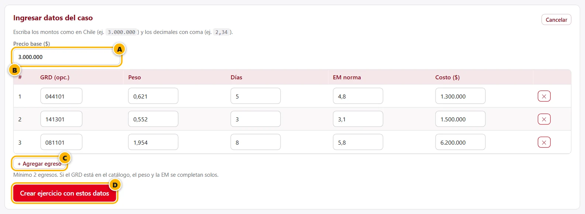
- Elija el nivel y presione Ingresar mis propios datos.
- A Escriba el precio base y los demás datos que pida el nivel.
- B En el nivel 4, complete una fila por egreso: GRD (opcional; si está en el catálogo completa peso y EM), peso, días, EM norma y costo.
- C Agregue filas con + Agregar egreso (mínimo 2 egresos) o quítelas con ✕.
- D Presione Crear ejercicio con estos datos y resuélvalo como cualquier otro.
- Entregue un código de ejercicio para que todos resuelvan el mismo caso.
- Pida el CSV del historial para revisar notas e intentos.
- Desde el análisis de un caso (capítulo 8), el botón Practicar los cálculos de este caso convierte cualquier caso en ejercicio.
10. Catálogo GRD
Para qué sirve: contiene, para cada GRD, su peso relativo, estancia media de la norma, puntos de corte (PCI, PCS) y P50. La aplicación los usa para calcular el pago y clasificar la estadía de cada egreso.
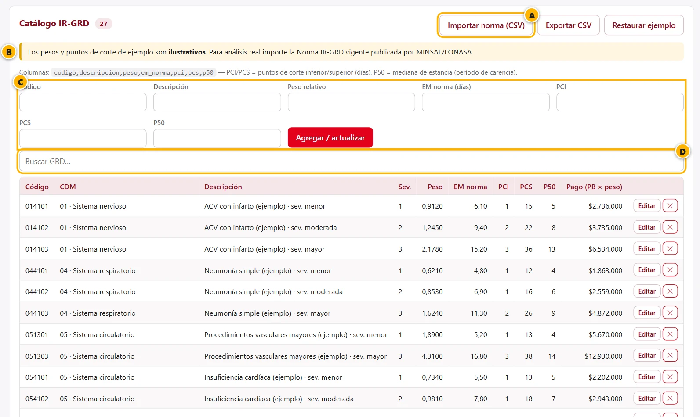
- A Importar norma (CSV): cargue la norma IR-GRD vigente con las columnas
codigo;descripcion;peso;em_norma;pci;pcs;p50. Junto a este botón están Exportar CSV y Restaurar ejemplo. - B Aviso: los pesos de ejemplo son ilustrativos.
- C Agregar o actualizar un GRD a mano (si el código ya existe, se reemplaza).
- D Buscador por código o descripción. Cada fila tiene botones para editar o borrar.
11. Parámetros y respaldo
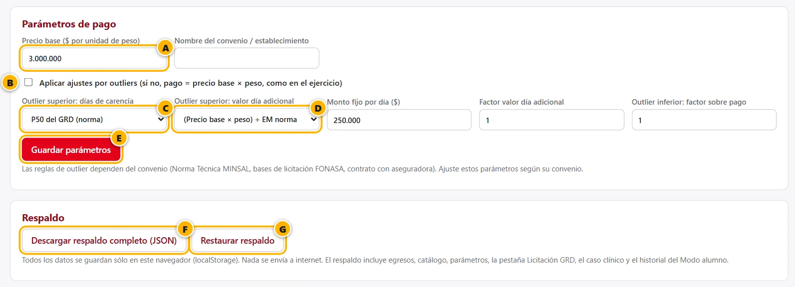
- A Precio base: el que usan Resumen, Distribución, Egresos y la comparación "precio base único" de Licitación.
- B Aplicar ajustes por outliers: si está desmarcado, pago = precio base × peso, sin ajustes (como en el ejercicio de la lámina).
- C Días de carencia del outlier superior: el P50 del GRD o ninguno.
- D Valor del día adicional: (precio base × peso) ÷ EM de la norma, o un monto fijo. Hay además un factor para ese valor y un factor para los outliers inferiores.
- E Guardar parámetros: los cambios se aplican al presionar este botón.
- F Descargar respaldo completo (JSON): guarda en un archivo todos sus datos: egresos, catálogo, parámetros, la pestaña Licitación GRD, el caso clínico y el historial del Modo alumno.
- G Restaurar respaldo: carga un respaldo, por ejemplo en otro computador. La aplicación se recarga sola para mostrar los datos restaurados.
12. Guía GRD
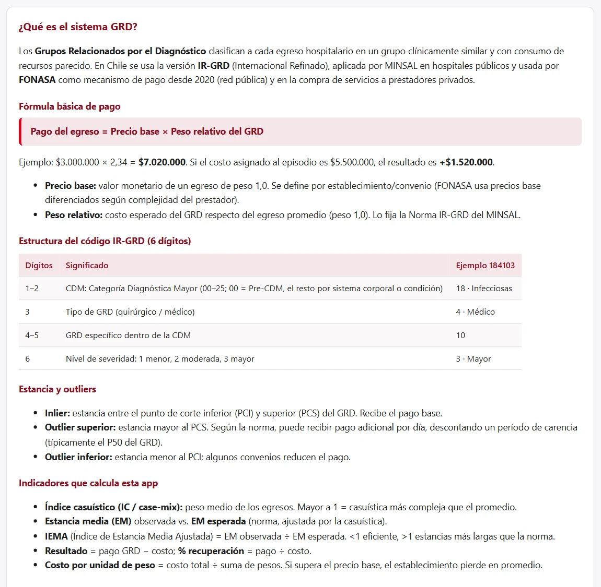
Explica qué es el sistema GRD, la fórmula de pago con el ejemplo de la clase, la estructura del código IR-GRD, los outliers, los indicadores que calcula la aplicación, cómo leer la pestaña Distribución y las fuentes de datos reales. Es un buen punto de partida antes de usar los demás módulos.
13. Preguntas frecuentes
Cerré la aplicación y mis datos no aparecen.
Los datos quedan en el navegador donde se ingresaron. Ábrala con el mismo navegador y el mismo usuario del computador. Para cambiar de equipo o navegador, use Parámetros › Descargar respaldo completo y luego Restaurar respaldo en el otro: el respaldo incluye todos los módulos, también el historial del Modo alumno. Para entregar las notas al docente, use Exportar resultados (CSV).
La aplicación marca mi respuesta como incorrecta aunque creo que está bien.
Revise la línea "Se leerá como…" bajo su respuesta: confirme que el número se interpretó bien (miles con punto y decimales con coma). Los montos van sin decimales y, si hay pérdida, con signo menos. El % de recuperación se pide con 1 decimal (por ejemplo, 127,6).
Un GRD de mis datos dice "no está en catálogo".
Agréguelo en Catálogo GRD (o importe la norma completa) o indique su peso en la columna peso del CSV o en el campo "Peso manual" del formulario.
¿Los pesos, precios y casos son oficiales?
No. Son ilustrativos para aprender. Las bases de camas críticas 2018 son un caso histórico. Los topes 2023 y 2024 provienen de análisis publicados de esas bases. Para decisiones reales use la normativa y las bases vigentes.
¿Cómo vuelvo a los datos de ejemplo?
En Egresos, presione Cargar datos de ejemplo. En Catálogo GRD, Restaurar ejemplo. En el Modo alumno, Borrar historial (con doble clic) reinicia las notas.
En el celular los gráficos se ven cortados.
En pantallas angostas los gráficos mantienen un ancho legible y se desplazan de lado dentro de su tarjeta: deslice el gráfico con el dedo. La barra de pestañas también se desliza de lado para ver todas las pestañas.
¿Cómo entrego un análisis al docente?
Desde Modo alumno › Analizar un caso use Imprimir informe y elija "Guardar como PDF". Para los ejercicios, exporte el historial en CSV.
14. Glosario
- Ajuste por tecnología
- Pago adicional al valor GRD, una vez por egreso, por prestaciones de alto costo definidas en las bases (en 2018: prótesis aórtica, plasmaféresis, sustitución renal continua, desfibriladores y coils cerebrales).
- Box-plot
- Gráfico que muestra el rango de un grupo: caja del P25 al P75, mediana, media y valores atípicos.
- CDM
- Categoría Diagnóstica Mayor: agrupa los GRD por sistema corporal (dos primeros dígitos del código IR-GRD).
- Costo por unidad de peso
- Costo ÷ peso. Es el precio base con el que un egreso o una institución quedaría en equilibrio.
- EM (estancia media) de la norma
- Días promedio de estadía esperados para un GRD.
- Egreso
- Alta de un paciente hospitalizado; es la unidad que se paga por GRD.
- IEMA
- Índice de Estancia Media Ajustada: estancia media observada ÷ estancia media esperada según la casuística.
- Índice casuístico
- Peso promedio de los egresos; mide la complejidad de la casuística (1,0 = promedio).
- Inadmisible
- Oferta que queda fuera de proceso porque algún precio base está fuera del rango de las bases.
- Inlier / outlier
- Egreso con estadía dentro de los puntos de corte (inlier), sobre el PCS (outlier superior) o bajo el PCI (outlier inferior).
- IR-GRD
- Versión de GRD (Internacional Refinado) usada en Chile. Código de 6 dígitos: CDM, tipo, GRD y severidad.
- P50 / período de carencia
- Mediana de estadía del GRD. En outliers superiores, los días adicionales se pagan después de PCS + P50.
- Percentil
- Posición de un valor en una distribución: P61 = supera al 61 % de los valores.
- Peso relativo
- Costo esperado de un GRD respecto del egreso promedio (peso 1,0).
- Precio base
- Valor monetario de un egreso de peso 1,0; en una licitación por tramos hay un precio base por tramo de peso.
- Puntos de corte (PCI / PCS)
- Límites inferior y superior de días de estadía de un GRD.
- % de recuperación
- Pago ÷ costo × 100: qué parte del gasto cubre el pago.
- Resultado
- Pago − costo. Positivo = ganancia; negativo = pérdida.
- Severidad
- Nivel de gravedad del GRD (último dígito): 1 menor, 2 moderada, 3 mayor.